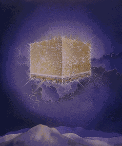
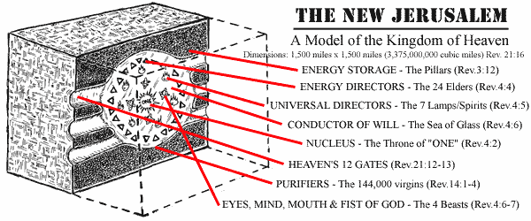
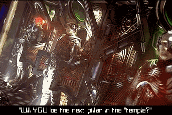
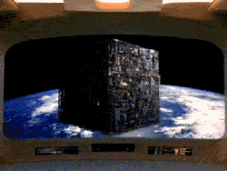
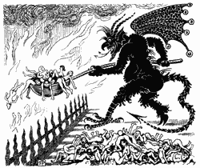

Something big is out there and it's on its way toward us right now. An object of enormous size is on a direct intersect course with planet Earth. This object is not a natural phenomenon but is under intelligent control and will bring about cataclysmic change to the world as we know it. This object is not an asteroid or a comet although it will use these things as tools to help it achieve its goals. This object is powered by the psychic energies of billions of life forms but it has only one mind, one will and one desire; the enslavement of the human race. What sinister force is behind this object and its agenda of complete annihilation of humanity? The same force that has attempted to thwart every effort man has made to achieve autonomy and technological advancement throughout history. Only now, as the final days of the struggle for man's freedom draw to a close, has this highly classified information, concerning the most hideous deception of mankind's history, been fully revealed. This object has been designated the Galactic Obliteration Device (G.O.D.). In mythology it has been given various labels, the most familiar of which in our modern death culture is "the kingdom of heaven." In the Bible this object is called "Zion", "Holy City of God" or "The New Jerusalem" (Rev. 14:1, 21:2, 10). We can get a glimpse of how this object is constructed and the place that human souls will play in it by doing a study of the book of Revelations in the Bible. When we take a look at the New Jerusalem that is spoken of in the Bible we see several things. First we see that it is similar to a giant mothership and that it will descend from space (Rev. 21:2) The dimensions of this ship are 1,500 miles wide by 1,500 miles long and 1,500 miles high. It's a giant cube (Rev. 21:16). The writers of Star Trek the Next Generation were being prophetic in their visions of the Borg ship when they portrayed it as a giant cube. The inspiration of the Lightbringer; Lucifer, is manifest in their attempts to show humanity the connection between the amorality of collectivism and the New Jerusalem but no one seems to be listening…until now.
When we dissect the cube of heaven we see that it is constructed like a living cell with its own system of energy circulation and metabolism. (See diagram above) From all appearances it is a giant soular battery/generator which allows the ONE mind of the collective G.O.D. to be able to feed off the life essences of the enslaved souls held within its "temple pillars" and redirect their energies according to the will of the ONE. When a human being dies, his life essence, spirit, or soul is scanned by the Soul Collectors who patrol the dimension between physical time/space and the finer dimension of subspace and these Collectors project an image before the just deceased soul of a life form that will be recognizable to the deceased, such as a relative or friend who had died before they had (a grandmother, religious figure, etc.). In this manner, the Soul Collector is able to get the newly deceased soul to lower his defenses. The Collector takes on the role of guide and attempts to lead the soul to the gates of the Holding Ship. In this Holding Ship, the spirit essence of the dead person is scanned again to determine its degree of purity of energy (its lack of resistant character traits) and its potential to provide nourishment to the collective mind of G.O.D. This potential is based on the degree that this spirit has been subdued through fear and dependence or how effective religious programming had been on this soul during its physical lifetime. Those spirits which have little or no self-will and have been sufficiently programmed to serve G.O.D. during their lives will have the highest nourishment potential. The Bible tells us what will happen to those who are selected as purest and most worthy to provide sustenance to G.O.D. They will be made "pillars" in the temple of God (Rev. 3:12). They will become a PART of the New Jerusalem and will nourish G.O.D. and "their tears will be wiped away and there shall be no more death neither sorrow nor crying neither shall there be any more pain for the FORMER THINGS are passed away." (Rev. 21:4) Sure, there won't be any more crying! All their memories will be wiped clean. They will no longer exist in a form that is recognizable to them or anyone else. They won't remember their past, they will only be sources of energy/nourishment to feed the will of the ONE.  Those stronger souls who do not blindly follow the Collector or who have used reason rather than blindly relying on faith during their lifetimes will not be as desirable to the ONE because they represent a threat to its control (just as Lucifer, the self-thinker was able to spark a rebellion which convinced over one third of the hosts of heaven to see the reasoning of freethought and self-reliance (Rev. 12:4, 7,9). This New Jerusalem is a doomsday machine with no room for possible dissent. Those who follow the Collector of Souls will be accessories after the fact to all the injustices and immorality which God has heaped upon mankind since the beginning of time.
"Accept Jesus as your personal savior and you'll get to fly up to heaven and be with him after you die." This is the battle cry of Evangelical Christianity, but how many Christians have actually taken the time to really think about what this heaven will be like? Most people are attracted to heaven through fear of the alternative: HELL! That pit of everlasting fire. Certainly anything would be better than THAT! Or would it? Since heaven is the place where the saved will be spending the rest of ETERNITY, you better make sure it is where you want to be before you go buying your one-way ticket there. What is heaven like? Ask different people this question and you'll get different responses. Some will say that heaven is a place of eternal joy and love where you will live in peace with no needs or pain. Traditional heavenly scenes show the spirits of deceased humans as angels with wings, white robes, and halos, sitting on clouds, strumming on harps and singing praises of hallelujah to God. Is this what you want to be doing for the rest of ETERNITY? Many believe that heaven is a place where you will be reunited with your dearly departed ancestors and that the family unit and memory of past experiences will continue on in this place, while others believe that all family ties become severed at the grave and in heaven there is only one big family. After learning about God's approaching "New Jerusalem," it's apparent that God has different plans for those who join his collective than what they have been taught.
Jesus claims that in heaven, all tears will be wiped away and all things will be made new (. As human individuals we must have memory of our past experiences for our lives to have any meaning to us personally. If your memories were taken away, the person you were would cease to exist to you, so conscious memory of who you are (self-realization) is what gives your life true meaning. Some believe that when we die we are reincarnated into another life form and thus continue to recycle throughout time. If this were true the past lives we lived wouldn't matter to us without a conscious memory of those past lives. There is no point in being reincarnated if we can't remember and make use of our past lives. Will you maintain your self-realization and memories in heaven? Not if you plan on having a life with no pain or suffering. Who we are is based on our past life experiences, both joyful and painful, and the memory of a painful experience causes a re-living of the pain that memory involved. To live a life of no suffering would require that all memory of suffering be erased. Who you were would have to be altered drastically in order for you to never suffer again. The person you know yourself to be right now could not exist in heaven. And what good does it do you to live for an eternity in harmony and peace if you can't remember your life experiences, the beauty of diversity, or the exquisite pleasures of the full spectrum of human experiences because you have lost awareness of who you were as an individual? As individuals, we find pleasure in various ways, most of these involving the expansion of our knowledge and life experiences. For some of us that means learning as much as we can about a topic of interest or several topics of interest. For others it means getting out and experiencing the world; exploring the wonders of nature, space, sports and whatever else which may bring us slack. Humans become weak if they are not challenged. Muscles atrophy if not stressed, so does the mind and the will. How long do you think it would take for strumming a harp and singing praises of hallelujah to become dull and boring? Eventually, if we don't have a continually challenging and diverse environment, we will die, yet in heaven you cannot die. You will continue to live the dull existence of being a servant of God's will, unable to think or feel for yourself for year after year after year, ENDLESSLY. This stagnation would not be heaven for human individuals it would be hell. Some religions believe that we do get to continue to progress into the eternities but even then we would eventually learn all there is to know and then what? One episode of Star Trek Voyager addressed this dilemma when it had a member of the Q Continuum (a group of eternal, god-like beings) who had grown tired of the endless eternities because he had experienced all there was to experience and just wanted to commit suicide and not exist any longer. Eternal stagnation is inevitable whichever path you take, but isn't it better to follow your own will into eternity instead of being a slave to some other being's will? There are worse fates than the sleep of the dead. Eternal stagnation as a slave of the collective will of God would certainly be worse than death.
God's heavenly goal is to surround himself with beings that are submissive, ignorant, dependent, blindly trusting (child-like) and committed to his will alone. (Matt. 18:3, 19:14, Mark 10:14-15, Luke 18:16-17) What do you think God is REALLY planning to use these "sheep" for? Jesus revealed what will happen to individuality in the collective of heaven when he prayed to God the Father, saying: "let them be ONE as you and I are one." (John 17:11,21-23) Individuality must die in the hive collective that will be heaven. Recently, the Star Trek series has shown the hideous and inhuman prospects of this collective mentality in their portrayal of the cyborgenic collective life form called "The Borg." The Borg have no individual wills or consciousness, they live only to serve the collective just as those in heaven will exist only to serve God. (Rev. 7:15) When we examine what God's intentions must be if all he wants are beings which will praise him ceaselessly with no resistance we discover that his plan is to develop an efficient energy device. The psychic/emotional energy which minds create in states of passion and submission is used by God as nourishment and power. The Bible reveals this throughout and shows us this fact in Revelations each time God is getting ready to display his power. Before he displays power, the members of the collective praise him and give him this power (Rev. 4:9-11, 7:9-12, 11:16-17,19, 14:3, 15:3-5,8, 19:4-7). In fact when John attempts to worship the angel of prophecy, the angel tells him "don't do that!" and says he must send his worship energy toward the Godhead collective (Rev. 22:8-9). Any sort of resistance which would make the transmission of energy less efficient is forbidden in heaven (Rev. 21:26-27) because God wants as much efficiency as possible in his nourishment matrix. The reason Jesus says that you must be poor and humble to gain entrance to heaven is that the rich know self-dependence and self-worth and would not be as easy to drain of their energy as those who are ready to give their all to the triune collective of the Godhead. The poor shall be first because they will provide the most efficient energy without resistance. All the teachings of the Bible point to this conclusion: God is preparing an efficient energy source for his collective will. Will you be a willing cog in the feeding machine that is JHVH-1? "But won't I go to hell if I don't get into heaven?" Fortunately, the evidence shows that hell is nothing but a threat that the God of the Bible has used to try to attract those who are easily manipulated by fear, lack of self-worth and dependence.  God doesn't want self-aware and self-reliant individuals in his heavenly matrix. Lucifer was able to see the error of following God and departed from the deceptive ways which God had planned for the earth. God didn't cause him to "fall" he left of his own accord as any self-respecting individual would do in the face of tyranny. If God had the ability to cast Lucifer into hell or destroy him he would have done that when he had the chance instead of allowing Lucifer to supposedly torment God's chosen people throughout history. The fact that Lucifer is free to upset the plans of the Collective New World Order of JHVH-1 shows that God doesn't have the power needed to contain him or other self-willed individuals. Lucifer was never afraid of the empty threats of Hellfire and damnation, you shouldn't be EITHER! No, friends, the God of the Bible is NOT the creator of all things, he just wants you to believe he is. He wants you to think he is infallible so you won't question his actions. He has created a "heaven" for those who blindly submit to his manipulations so that he can continue to drain energy from them as a source of nourishment into eternity. If you believe that God is the father of all mankind and that he really loves us as a father, you should also know that a truly loving and just creator would never allow for his children to be punished beyond what they deserve. Any offense that men can commit in this finite existence can be paid for in a finite amount of time. Therefore the idea of an eternal lake of fire where people burn in anguish and torment forever is contradictory to the concept of a just, merciful and loving creator. If you want to believe in hell then you must admit that God is not just and definitely not very merciful or loving. And if you can admit that, then how could you live with yourself knowing that this is the being you will serve ETERNALLY? The light of truth and reason tells us that the God who created the hive-colony energy-matrix called "heaven" has no power to put people into any lake of fire. The goal of the God of the Bible is to form a collective of same-minded life forces which he can use to strengthen his energy base and to expand the single will of "God" to all the universe like a cancer. The end result of this would of course be a void of sameness. When all you have is an endless collective of sameness you have a void. Think about that for a minute. Without any diversity, all that exists is sameness. A void of sameness. The same as the void which the Bible claims existed before God poofed us all into existence. The ultimate goal of God is thus ANNIHILATION! We must resist returning to the annihilation of this void of sameness at all costs!

Return to the Luciferian Liberation Front's Main Page.
E-Mail your questions and comments.